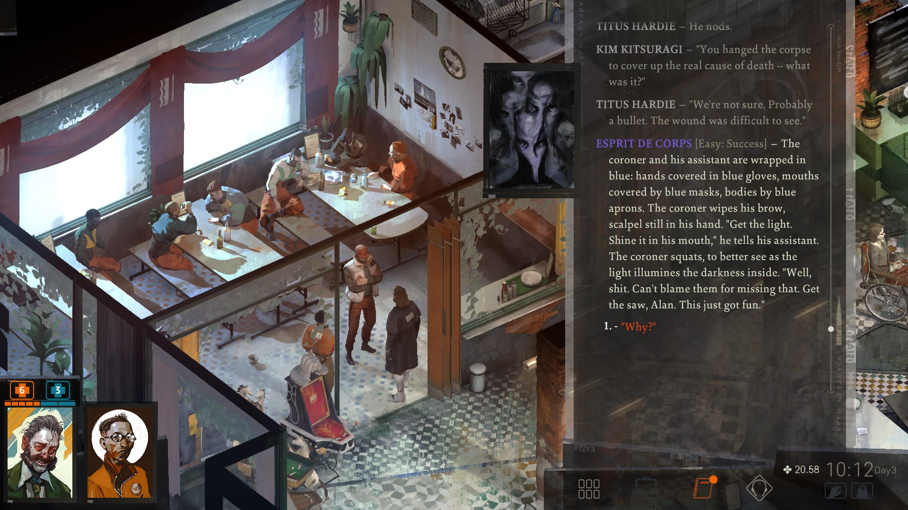

Disco Elysium is a role-playing game published in 2019. It was written and desgined by Estonian writer Robert Kurvitz. It is known for its distinct oil pant art style, game mechanics, and narrative. A "Final Cut" edition of the game was published in 2021, featuring additional content including full voice acting. Here in this post. we will explore the unique aspects of this game.

Disco Elysium is quite different from other role-playing games, instead of traditional mechanics
found in traditional RPGs it relies on a combination of skill checks via dice rolls and dialogue
options with both interact with 24 different character skills. All mechanics like combat or
minigames are completely absent. What makes the game so special is how
the dialogue choices and skill checks, interacts with the current character's skills.
For example if your character has an high empathy skill, new text and dialogue options
would open up and the player
would have a high chance of passing an "empathy" skill check that would unlock even more dialogue
and text. In many cases in the game, the character would have a high enough skill that it triggers
multiple skills at the same time. These skills are presented in game as different voices in the
player's head, who speak up
at the right time.
The game is not set in our world, but in one where the laws of reality are optional. The world is
broken up into islands of reality, known as isolas, by the Pale, a fog-like space of unreality
extremely dangerous to human life. In the background, there are many different clues to the state of
this very different world that has led to the current state of the setting and the events of the
game.
In addition Disco Elysium has two different inventory systems. First is the traditional system found in most games, where wearing different gears can give different bonuses or malsuses. The other system is the "Thought Cabinet". While the character is exploring the world and talking with the people that live in it, a thought can strike their mind. The player character can decide to pursue the thought futher in the "Thought Cabinet" a menu where the player choose to "conceptualize" it. After mulling it over for several hours, the player character can fully conceptualizes the thought and is awarded bonuses for doing so. It functions as sort of inventory system that allows the player to fit into a certain role that the player desires or gain benefits to pass a certain skill check.
In order to cover all these dynamic options, the developers wrote over a million words for the Final
Cut edition of the game, all fully voiced. While the game features a couple dozen voice actors, a
person named Lenval Brown had the lion's share of the lines, over. As it happens he had never voice
acted up until that point except for three
words for a small project of his. In an